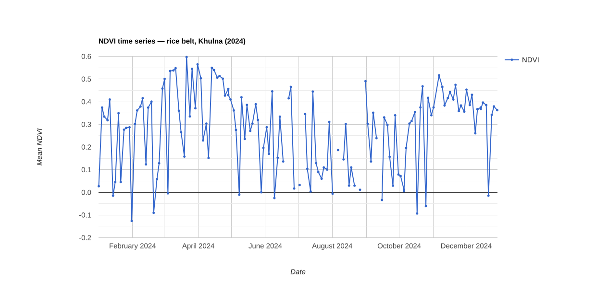
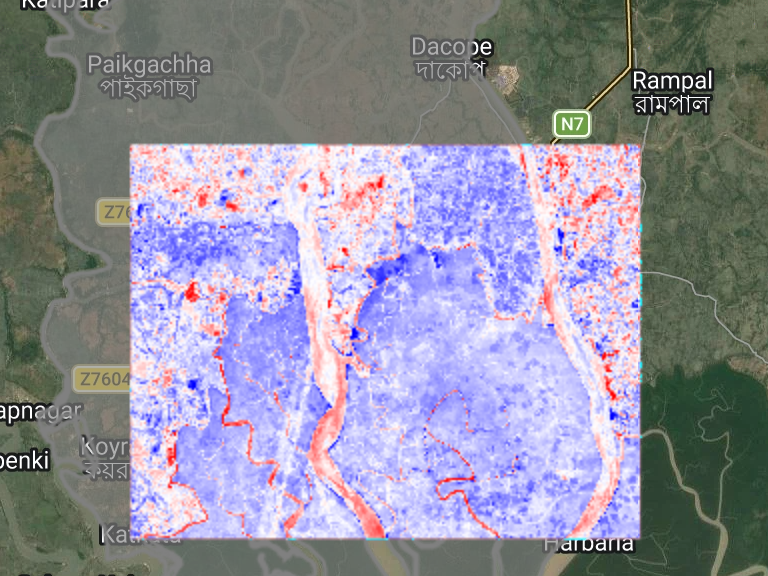
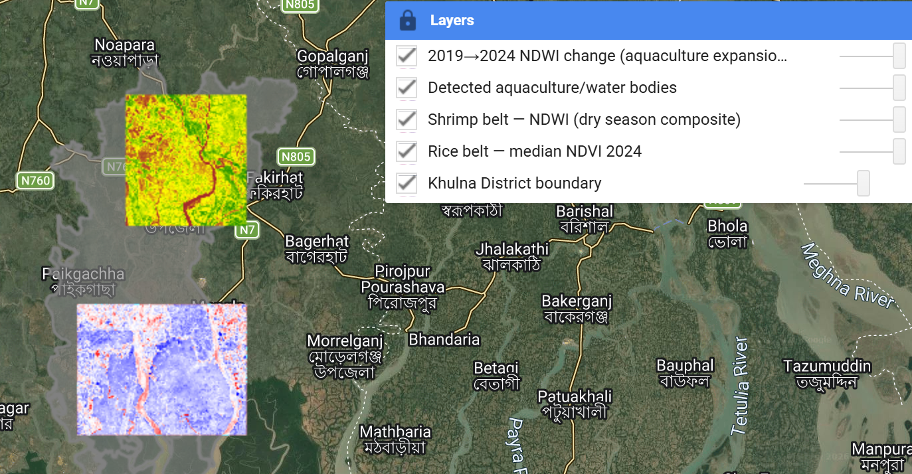

Free satellite imagery, read into growth-stage tracking for rice paddies and extent-and-change mapping for aquaculture ponds across Khulna district.
Built on the cloud-masking method proven in snow-cover research in the Czech mountains, applied here to monsoon cloud cover over the Bengal delta. No paid imagery, no license fee.
NDVI time-series over Boro and Aman season rice, tracking growth stages and flagging stress early, even through monsoon cloud cover.
Shrimp (bagda) pond extent, mapped and tracked year over year across the Paikgacha, Koyra and Dacope belt.
This isn't a repackaged dataset. The cloud-masking and multi-date compositing approach is the same technique used for snow-cover retrieval from MODIS Terra and Aqua imagery in Czech mountain catchments, cross-applied to Sentinel-2 over monsoon-affected Khulna.
What the open-source CLI actually does, step by step, including the part that isn't validated yet.

Rice belt NDVI, 2024. Early-season points are cleanest; monsoon-season gaps are exactly what the Terra/Aqua-style multi-sensor compositing from the thesis method is built to fill in.

Shrimp belt, Paikgachha-Dacope-Koyra: 2019 to 2024 NDWI change. About 138.2 sq km of water/pond surface detected in this AOI.

Both belts in the actual working session: rice (top) and shrimp/aquaculture (bottom), every layer individually toggleable. Not a mockup.
Rather than just claim it works, I benchmarked it. Three reconstruction approaches, including the one this project uses, were tested by hiding real satellite observations and checking whether each method could recover them, repeated across three different cloud-detection settings rather than trusting a single run.
The result: the smoothing approach used in this project consistently recovered hidden data better than plain interpolation and a more complex published 2025 alternative. It's a bounded, three-location study, not a peer-reviewed paper, and it says so plainly in the full writeup.
I grew up in Khulna. I'm now doing a master's thesis on satellite-based snow-cover and cloud-masking methods in the Czech Republic. Khet Mapper points that same method back home, as a genuine cross-application rather than a copy of someone else's published study.
This is a free, independent demo, not a funded product. Before building anything further, I'm looking for people who actually work with rice or aquaculture data in Khulna to tell me what it's missing.
If you work with rice or aquaculture data in Khulna, at an NGO, agribusiness, insurer, or as a researcher, I'd like to show you this and ask what you'd actually need from it.